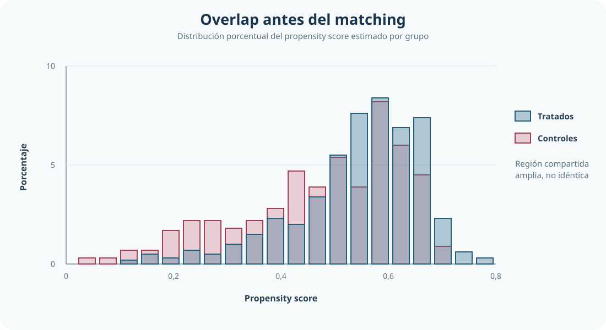
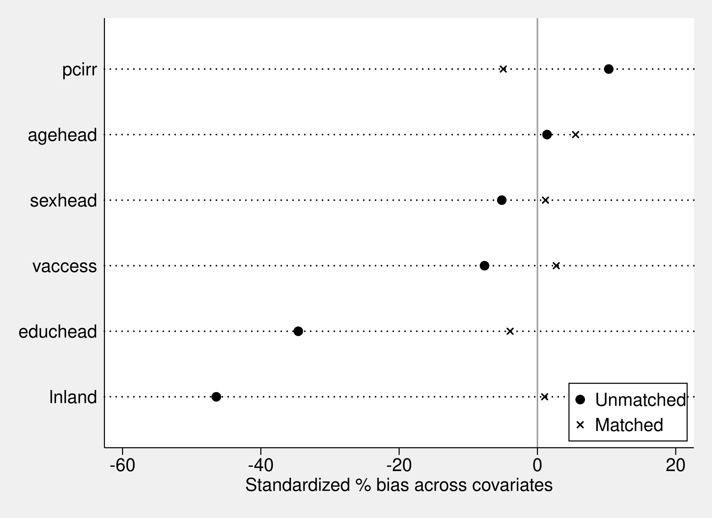

Microcrédito femenino y gasto del hogar: evidencia con PSM bajo criterio de comparabilidad
Estimación del efecto sobre hogares tratados comparables en soporte común
<- Volver al índice de Causalidad
En PSM, la decisión relevante no es el efecto más alto, sino el contrafactual más creíble
Esta aplicación estima el efecto de la participación femenina en microcrédito sobre el gasto del hogar comparando alternativas de soporte y emparejamiento bajo un criterio explícito de comparabilidad.
Resumen ejecutivo
Este estudio evalúa el efecto de la participación femenina en microcrédito sobre el gasto del hogar con Propensity Score Matching (PSM) en una muestra de 1.129 hogares. El punto central no es maximizar el ATET, sino elegir un diseño que combine soporte, balance y precisión.
La comparación entre reglas de soporte muestra que common ofrece, en esta aplicación, un compromiso más defendible entre cobertura y comparabilidad que trim(10).
Bajo ese marco, la especificación preferida en esta aplicación es kernel biweight bw = 0.40*SD(LPS) + common, con respaldo en una regla de selección predefinida.
Pregunta central
¿Cuál es el efecto de la participación femenina en microcrédito sobre el gasto del hogar cuando el contrafactual se construye con PSM y la decisión de diseño prioriza comparabilidad?
Datos y variables
- Unidad de análisis: hogares (
N = 1129). - Tratamiento: participación femenina en microcrédito (
dfmfd). - Resultado: logaritmo del gasto total del hogar (
lexptot). - Covariables de comparabilidad: sexo, edad y educación de la jefatura del hogar; tierra; acceso vial; riego per cápita; e indicadores de producción/consumo alimentario.
La lectura causal descansa en selección en observables y soporte común. Por eso, el diseño se evalúa por comparabilidad ex ante entre tratados y controles antes de convertir los resultados en afirmaciones sustantivas.
Por qué la comparabilidad importa
En este caso, tratados y controles no son intercambiables sin ajuste: difieren en covariables que también se asocian con el gasto. Si esa diferencia no se corrige, la comparación mezcla efecto del tratamiento con composición inicial de grupos.
PSM permite construir un contrafactual más creíble al combinar tres capas: estimación del propensity score, decisión de soporte y chequeo de balance. La decisión metodológica relevante surge de esa secuencia, no del tamaño aislado del coeficiente final.
Soporte y comparabilidad: common frente a trim(10)

La superposición es relevante, pero las distribuciones no son idénticas: definir soporte y comparabilidad sigue siendo necesario antes de construir el contrafactual mediante matching.
| Regla de soporte | Soporte retenido (N1/N0) |
Observaciones fuera de soporte | Balance global (post-matching) | Lectura |
|---|---|---|---|---|
common |
591 / 530 | 8 | MeanBias = 4.7, B = 20.2, R = 0.93 |
Mayor cobertura con mejora global clara de comparabilidad |
trim(10) |
536 / 481 | 112 | MeanBias = 4.9, B = 21.8, R = 0.95 |
Podado más agresivo sin mejora concluyente en desbalances residuales clave |
Aunque trim(10) recorta más soporte, esa poda no domina la decisión: en esta aplicación no corrige mejor los desbalances residuales más sensibles y reduce la muestra utilizable.
Especificación preferida y criterio de elección
La especificación preferida en esta aplicación es:
kernel biweight bw = 0.40*SD(LPS) + common.
La lógica de elección es explícita: priorizar comparabilidad, soporte y precisión entre candidatas viables. La regla operativa fija umbrales de diseño (max|SMD| <= 0.10, maxvr <= 2, share1 >= 0.80) y, entre candidatas que cumplen, prioriza mayor retención de tratados y mayor ESS de controles antes que un ATET más alto.
Como respaldo visual del balance post-matching, se muestra el love plot de la especificación seleccionada.

Con el diseño validado y la especificación ya elegida, el bloque siguiente resume los efectos estimados.
Resultado principal: comparación de ATET y contrastes
Especificación PSM (common) |
ATET estimado | Lectura breve |
|---|---|---|
| NN(1) | 0.1108 | Referencia comparativa |
| NN(2) | 0.1135 | Resultado cercano a la referencia |
| NN(8) | 0.1119 | Estabilidad en el rango central |
| Radius (caliper 0.01) | 0.1008 | Magnitud algo menor, misma señal positiva |
Kernel epanechnikov (h = 0.06, bootstrap) |
0.1070 | Magnitud consistente con el rango principal |
La comparación sugiere estabilidad en órdenes de magnitud cercanos a 0.10-0.11 para diseños razonables en soporte común.
| Opción de contraste | ATET | Precisión / inferencia | Rol en la decisión |
|---|---|---|---|
PSM common + NN(1) |
0.1108 | EE psmatch2 (aprox.) 0.0428 |
Referencia metodológica base |
PSM trim(10) + NN(1) |
0.1279 | EE psmatch2 (aprox.) 0.0441 |
Contraste con menor soporte y mayor poda |
PSM common + kernel biweight bw = 0.40*SD(LPS) |
0.1099 | EE bootstrap 0.0273 | Especificación preferida |
teffects psmatch (ATET, probit, NN(1)) |
0.1099 | EE robusta de Abadie–Imbens 0.0362 | Contraste secundario de estabilidad |
Lectura sustantiva del ATET: población objetivo y alcance
Estimando reportado
ATET para hogares tratados comparables en soporte común, con valor de referencia de 0.11 en log del gasto, equivalente aproximadamente a 11%-12%.
Población objetivo
Hogares tratados que permanecen en la región de soporte común y pueden compararse con controles observacionalmente similares.
Alcance
Interpretación válida bajo selección en observables y overlap; no extrapolable automáticamente al total de hogares.
En términos sustantivos, un ATET alrededor de 0.11 indica que, para los hogares tratados comparables en soporte común, el gasto total esperado es mayor que su contrafactual no tratado comparable.
Cierre: qué se concluye y qué no
La pregunta inicial puede responderse de forma directa: al construir el contrafactual con PSM bajo criterio de comparabilidad, el efecto estimado sobre hogares tratados comparables en soporte común es positivo y equivale aproximadamente a un gasto total esperado 11%-12% mayor frente a su contrafactual comparable.
Dentro de las reglas de soporte evaluadas, common resulta más defendible que trim(10); ese contraste funciona como un insumo del criterio general de diseño, no como fundamento único de la elección final.
Esta evidencia no autoriza una afirmación causal absoluta para toda la población. La conclusión preferida aplica a hogares tratados que quedan dentro del soporte común efectivo; su alcance queda delimitado por el diseño observacional, la calidad del soporte común y los supuestos de selección en observables.